Arcane Library
Arcane LibraryShowcase
Screenshots
Taken in the real game. Click any image to enlarge; arrow keys move between them.

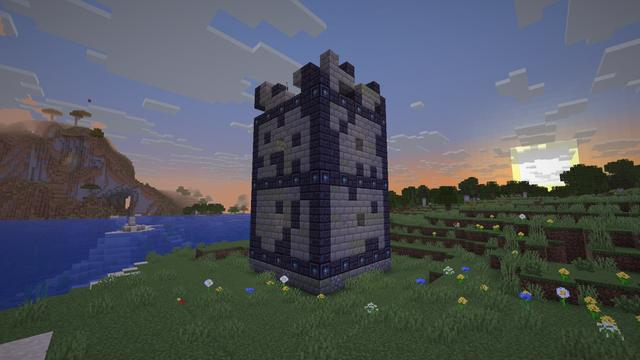
A Ruined Librarian Tower at sunset
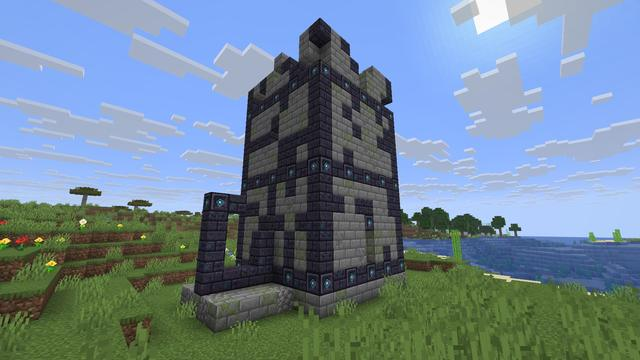
The tower and its broken portal frame A lit Library portal at dusk
A lit Library portal at dusk
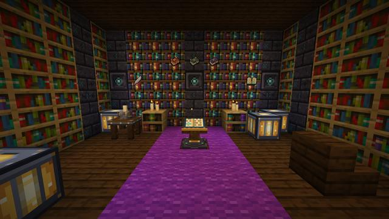
An enchanting nook: the Arcane Lectern in its element A street of the Arcane Library
A street of the Arcane Library
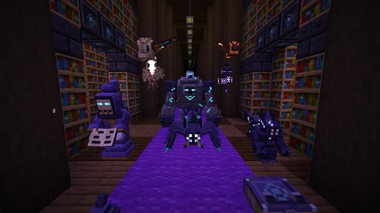
The keepers of the Library
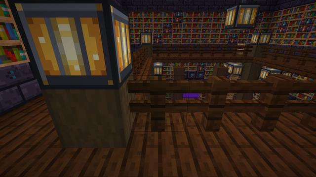
A two-storey gallery with balconies
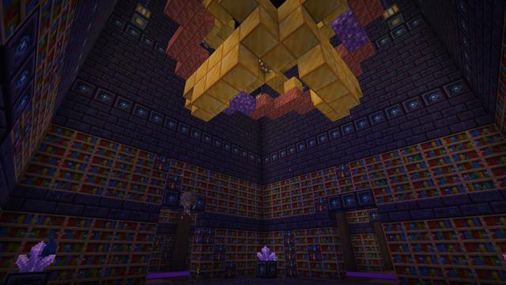
The orrery under its starry vault
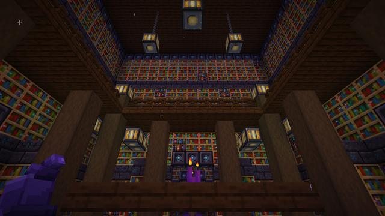
Gallery floor
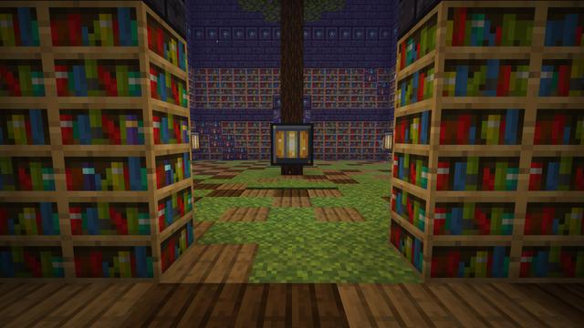
An atrium A sealed archive of chained books (Restricted Section)
A sealed archive of chained books (Restricted Section) The Restricted Section
The Restricted Section The Arcane Lectern after an inscription roll
The Arcane Lectern after an inscription roll
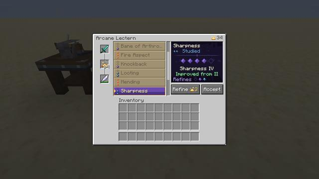
A refined roll at the Lectern The Codex of the Learned
The Codex of the Learned
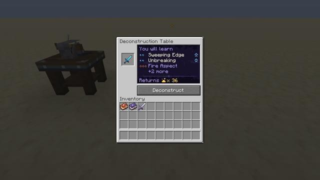
The Deconstruction Table preview The Archivist
The Archivist
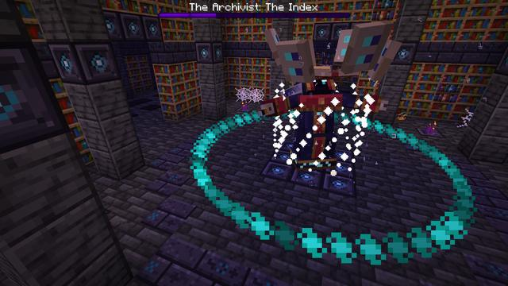
The Archivist's final chapter Erasure: marked floor bands wiped by a wave
Erasure: marked floor bands wiped by a wave The Archivist's page spiral
The Archivist's page spiral Recall: the tether pulls you to the dais
Recall: the tether pulls you to the dais
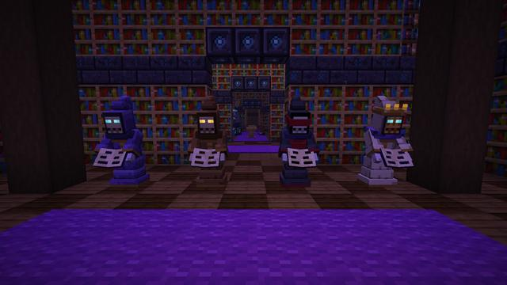
Silent Librarians
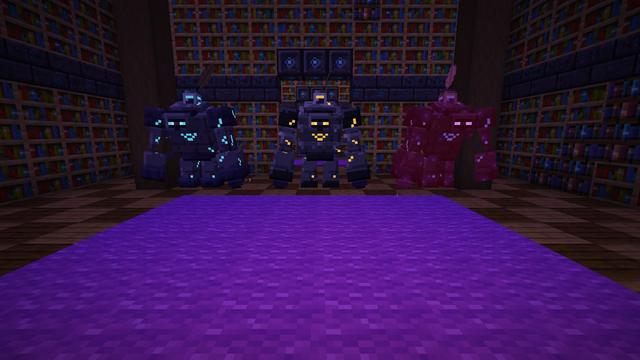
Ink Golems
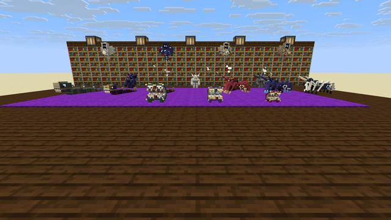
A gathering of creatures